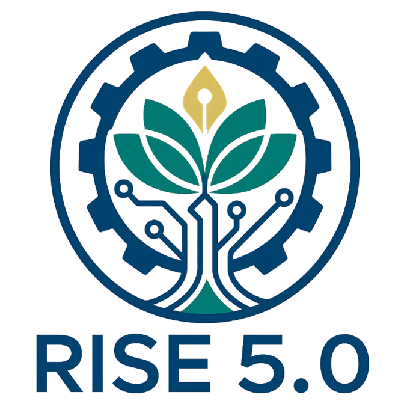
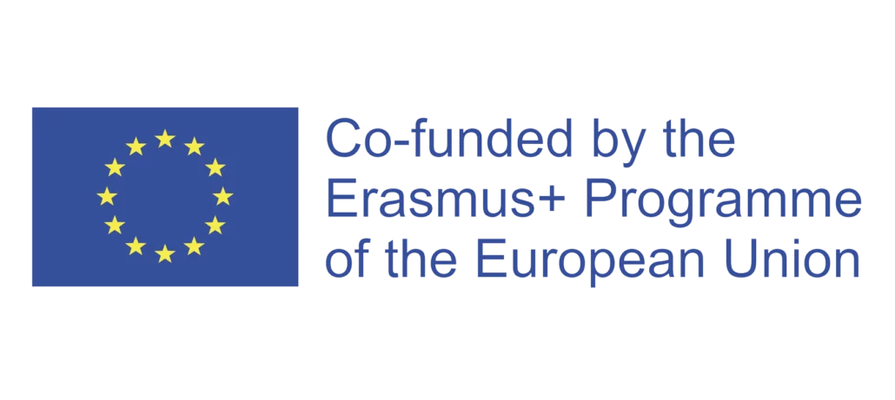
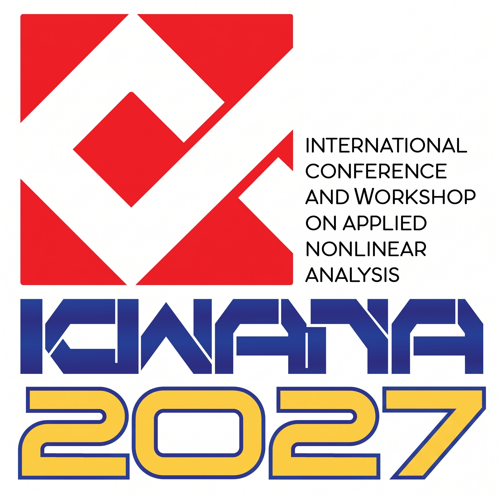

<footer id="contact" class="bg-slate-950 text-slate-400 py-16">
    <div class="max-w-7xl mx-auto px-4 sm:px-6 lg:px-8">
        
        <!-- Sponsors & Co-funding Section -->
        <div class="mb-12 pb-12 border-b border-slate-800/80 text-center">
            <h4 class="text-xs font-bold uppercase tracking-widest text-amber-400 mb-6">
                Sponsors & Co-funded By
            </h4>
            <div class="flex flex-wrap justify-center items-center gap-6 md:gap-10">
                <!-- 1. RISE 5.0 Logo -->
                <div class="bg-white p-3.5 rounded-2xl shadow-md flex items-center justify-center h-24 w-44 hover:scale-105 transition duration-200">
                    
                </div>
                <!-- 2. Erasmus+ EU Logo -->
                <div class="bg-white px-5 py-3.5 rounded-2xl shadow-md flex items-center justify-center h-24 w-72 hover:scale-105 transition duration-200">
                    
                </div>
                <!-- 3. FF-KMUTNB Logo -->
                <div class="bg-white p-3.5 rounded-2xl shadow-md flex items-center justify-center h-24 w-44 hover:scale-105 transition duration-200">
                    
                </div>
            </div>
        </div>

        <!-- Contact & Info Grid -->
        <div class="grid md:grid-cols-3 gap-10">
            <div>
                <div class="flex items-center space-x-3 mb-3">
                    
                    <span class="text-2xl font-extrabold text-amber-400">ICWANA<span class="text-white">2027</span></span>
                </div>
                <p class="text-sm mt-3 leading-relaxed">
                    The 5th International Conference and Workshop on Applied Nonlinear Analysis.<br>
                    July 28–31, 2027 | Pattaya Beach, Chonburi, Thailand.
                </p>
            </div>
            <div>
                <h4 class="text-white font-bold mb-3">Contact</h4>
                <p class="text-sm leading-relaxed">
                    <strong>Prof. Dr. Poom Kumam</strong><br>
                    Center of Excellence in Theoretical and Computational Science (TaCS-CoE), Faculty of Science,<br>
                    King Mongkut's University of Technology Thonburi (KMUTT),<br>
                    126 Pracha-Uthit Road, Bang Mod, Thung Khru, Bangkok 10140, Thailand
                </p>
            </div>
            <div>
                <h4 class="text-white font-bold mb-3">Inquiries & Links</h4>
                <ul class="space-y-2 text-sm">
                    <li><i class="fa-regular fa-envelope text-amber-400 mr-2"></i> <a href="mailto:iwana2022bangkok@gmail.com" class="hover:text-white">iwana2022bangkok@gmail.com</a></li>
                    <li><i class="fa-solid fa-phone text-amber-400 mr-2"></i> (+66) 2470-8994</li>
                    <li><i class="fa-solid fa-globe text-amber-400 mr-2"></i> <a href="https://wganacom.wordpress.com/" target="_blank" class="hover:text-white">WG-ANA Official Website</a></li>
                </ul>
            </div>
        </div>

        <!-- Copyright -->
        <div class="mt-12 pt-8 border-t border-slate-800 text-center text-xs text-slate-500">
            © 2027 ICWANA2027 — Working Group on Applied Nonlinear Analysis (WG-ANA) & TaCS-CoE, KMUTT. All Rights Reserved.
        </div>
    </div>
</footer>
